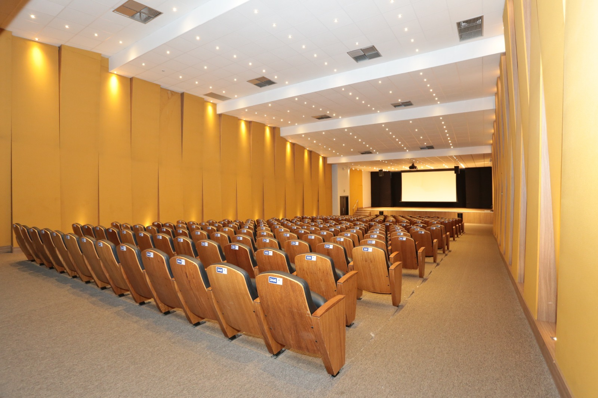

Foto em breve
Palestrante aqui
Nome e formação do palestrante
Tema da palestra

O Congresso de Saúde Mental e Longevidade reúne especialistas em Sinop para uma imersão em Saúde Mental, Ciência e Longevidade.
Especialistas com atuação comprovada em saúde mental e práticas integrativas — selecionados pela profundidade do conhecimento, não pela popularidade.
Aprofunde sua compreensão sobre saúde mental com base na ciência mais atual — sem achismos e sem receitas prontas.
Conecte-se com profissionais e estudantes da saúde que compartilham do mesmo propósito — dentro do seu próprio estado.
Receba seu certificado digital de participação com carga horária — válido para atualização do histórico profissional e acadêmico.
Saia com perspectivas novas e ferramentas concretas para aplicar na sua vida ou na sua prática clínica já a partir do dia seguinte.
Especialistas com atuação comprovada em saúde mental, práticas integrativas e medicina do futuro. Os palestrantes do Congresso de Saúde Mental e Longevidade serão divulgados em breve. Fique de olho.
Palestrante aqui
Nome e formação do palestrante
Tema da palestra
Palestrante aqui
Nome e formação do palestrante
Tema da palestra
Palestrante aqui
Nome e formação do palestrante
Tema da palestra
Palestrante aqui
Nome e formação do palestrante
Tema da palestra
Palestrante aqui
Nome e formação do palestrante
Tema da palestra
Palestrante aqui
Nome e formação do palestrante
Tema da palestra
Nomes confirmados em breve.
Trabalha com saúde há anos — mas sente que o modelo atual não dá conta da complexidade do ser humano.
Quer integrar práticas complementares à sua atuação, mas não sabe por onde começar com embasamento científico.
Percebe que a saúde mental dos seus pacientes — ou da sua própria vida — está pedindo socorro, enquanto o sistema continua olhando só para os sintomas.
Sente que a atualização profissional está ficando para trás enquanto a ciência integrativa avança em velocidade acelerada.
Quer se conectar com outros profissionais que pensam de forma ampliada — e não encontra esse espaço em Mato Grosso.
Se você disse sim para qualquer uma dessas situações, este evento foi construído para você.
O Congresso de Saúde Mental e Longevidade, em Sinop, é o maior encontro do norte de Mato Grosso dedicado a conectar ciência e saúde integrativa.
Dias completos de palestras, trocas e conhecimento aplicado, com foco nos temas mais urgentes da saúde contemporânea: Saúde Mental, Ciência e Longevidade.
Não é um evento comum de saúde. É uma imersão que une o rigor científico com a profundidade das práticas integrativas — para profissionais, estudantes e qualquer pessoa que acredita que saúde é muito mais do que ausência de doença.

Você é profissional de saúde (terapeuta, médico, psicólogo, fisioterapeuta, nutricionista, enfermeiro, educador físico) e quer atualizar sua prática com embasamento científico em saúde integrativa.
Você é estudante da área da saúde e quer sair na frente com uma visão ampliada do cuidado humano antes de se formar.
Você não é da área da saúde, mas acredita que saúde mental é prioridade — e quer entender, com base na ciência, quais caminhos já estão disponíveis.
Você quer se conectar com uma rede de profissionais que pensam diferente, dentro de Mato Grosso.
A grade completa do Congresso de Saúde Mental e Longevidade, com palestrantes e horários, será divulgada nos próximos meses. Fale com a gente para receber em primeira mão.
Todos os palestrantes apresentam práticas com evidência científica. Nenhum modismo sem embasamento entra no palco.
Cada especialista foi selecionado pela profundidade do conteúdo e pela experiência clínica real — não pela popularidade nas redes.
Dias no mesmo espaço com pessoas que compartilham do mesmo propósito. As conexões nos intervalos valem tanto quanto as palestras.
Reconhecimento formal da sua atualização, válido para histórico acadêmico e profissional.
Um evento de nível nacional acontecendo aqui — para quem está aqui. Sem precisar viajar para São Paulo ou Brasília para acessar o melhor da saúde integrativa brasileira.
Mais de 220 participantes em média por edição já passaram pela Jornada. A próxima história pode ser a sua.
O Congresso acontece em Sinop, no norte de Mato Grosso. O espaço, o endereço e as orientações de como chegar serão divulgados em breve.
Vamos indicar hotéis parceiros próximos ao local do Congresso, com condições especiais para quem vem de outras cidades. Em breve aqui.
As vendas do Congresso de Saúde Mental e Longevidade abrem em breve. Entre na lista e receba o aviso antes de todo mundo.
Em abril de 2027, Sinop vai sediar a conversa mais importante da saúde contemporânea em Mato Grosso. Uma experiência que vai mudar a forma como você pensa, cuida e vive a saúde.
A pergunta que fica é simples: você vai estar lá?
Sim! Quero entrar na lista!⚡ Vagas limitadas à capacidade do espaço · Certificado digital incluso